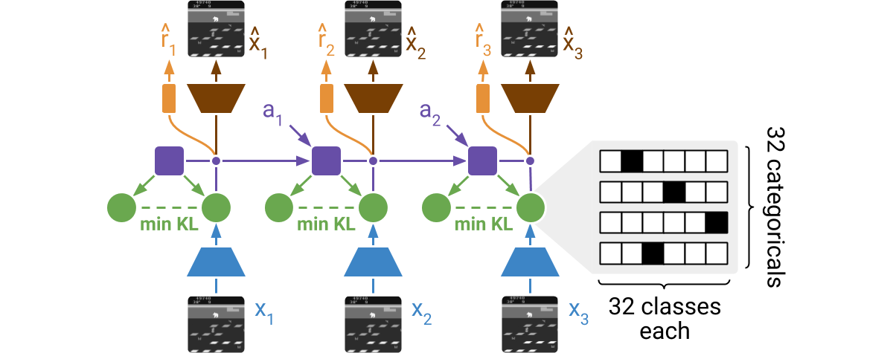

Here is where I'll keep notes on the papers I am reading, and ideas for research directions, etc... Posts may be any length, as long as I'm inspired to write about. Inspired by Vitaly's research notes. Some longer-form, somewhat more traditional blogging of mine can be found here.
DreamerV2